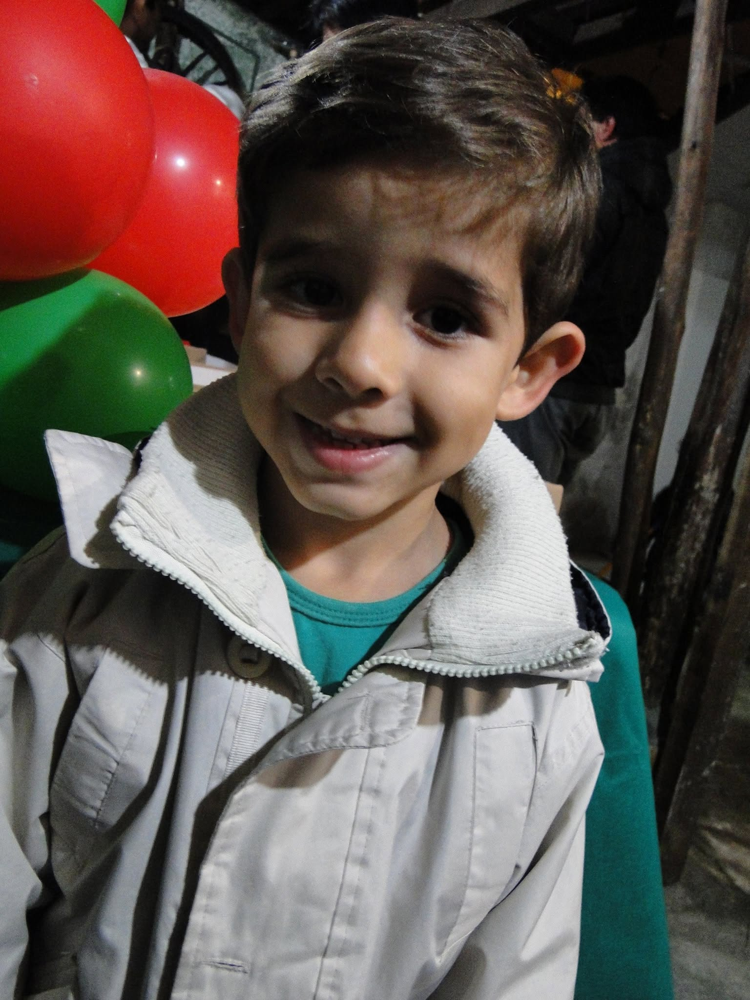
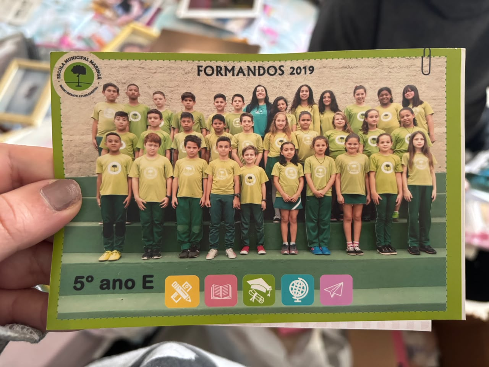
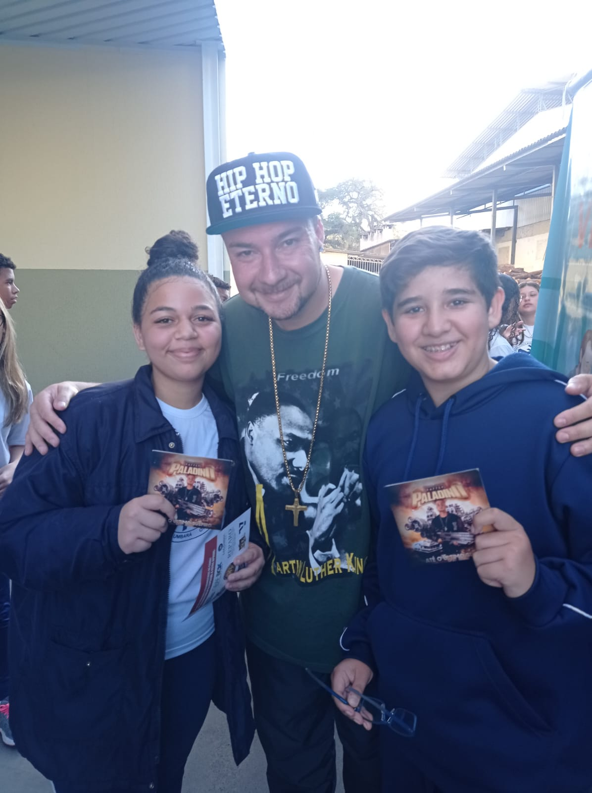
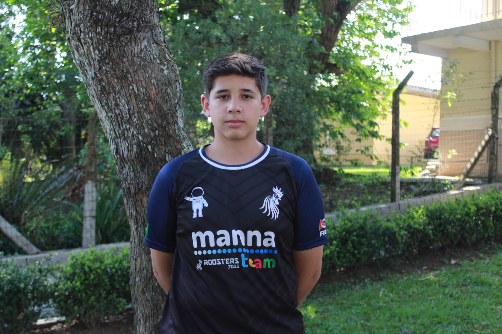
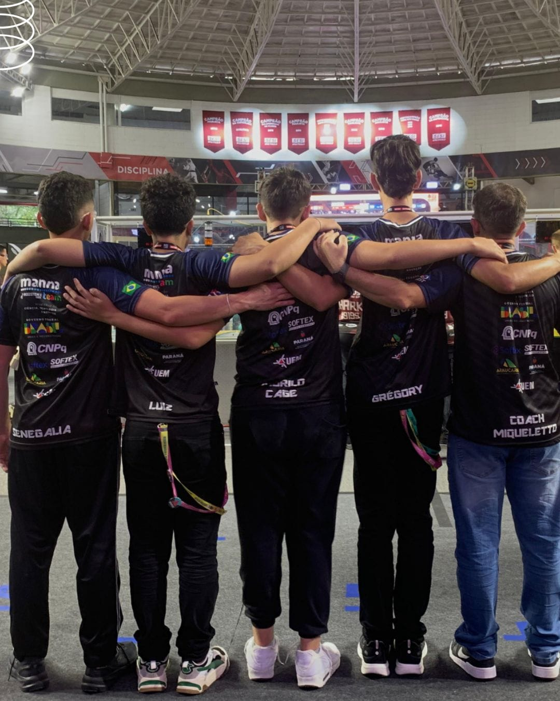
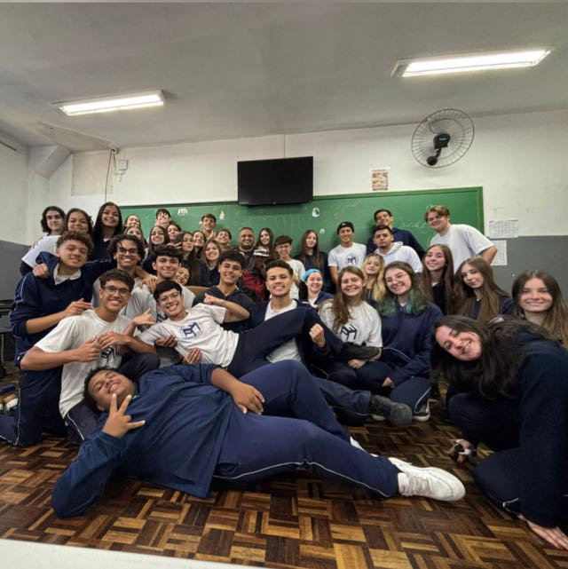

01
Jardim de infância / Pré-escola
Onde tudo começou: primeiras descobertas, brincadeiras e amizades.

UM CICLO, MUITAS HISTÓRIAS
Entre descobertas, desafios, amizades e aprendizados, cada etapa deixou uma marca. Este espaço reúne um pouco da história que construí ao longo da vida escolar.
É sobre olhar para trás e reconhecer tudo o que aconteceu no caminho. As primeiras amizades, as matérias difíceis, os trabalhos em grupo, as conquistas e os dias inesquecíveis.
Meu nome é Murilo Cage Rosa, sou estudante do Colégio Estadual Padre Cláudio Morelli e este site é um registro da minha caminhada: da infância até a conclusão do 3º ano do Ensino Médio.
Uma viagem por cada fase da vida escolar. Selecione uma etapa para descobrir os relatos, as curiosidades e os momentos que marcaram aquele período.
Onde tudo começou: primeiras descobertas, brincadeiras e amizades.

Aprender a ler o mundo, construir amizades e descobrir novos interesses.

Uma fase de mudanças, novos desafios e experiências importantes.

Novas responsabilidades, colegas e uma etapa completamente diferente.

Projetos, aprendizados e momentos que tornaram essa jornada especial.

Despedidas, conquistas, expectativas e preparação para o futuro.

O que vivemos na escola não fica apenas nos cadernos. Fica nas histórias que vamos contar.UMA REFLEXÃO SOBRE O CAMINHO
Dezessete produções desenvolvidas nas aulas de Língua Portuguesa e Redação. Cada texto representa uma reflexão e uma etapa do meu aprendizado.
Nenhuma redação encontrada.
FIM DE UM CICLO, INÍCIO DE OUTROS
Concluir o Ensino Médio significa encerrar uma etapa cheia de pessoas, experiências e aprendizados. Levo comigo as lembranças, os conhecimentos e a vontade de descobrir o que vem pela frente.
Obrigado por fazer parte dessa história.